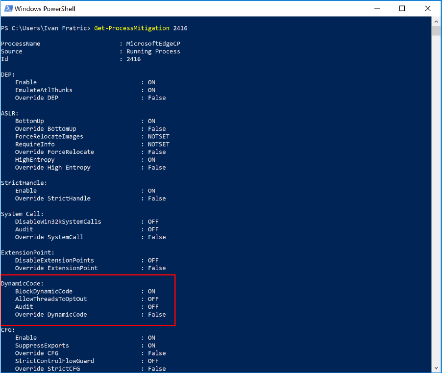

Это копия моего перевода, опубликованного на Хабрахабр: Механизм Arbitrary Code Guard (ACG) на примере Microsoft Edge.
Disclaimer
- Эта публикация является переводом части документа "Bypassing Mitigations by Attacking JIT Server in Microsoft Edge" от Ivan Fratric (Google Project Zero). Переведена та часть, в которой находится описание механизма ACG и его применение в браузере Microsoft Edge. За рамками этого перевода осталось более подробное описание внутренностей JIT в Chakra (Microsoft Edge JavaScript Engine) и векторов атаки на него (с описанием найденных уязвимостей, исправленных к моменту публикации документа).
- По роду своей профессиональной деятельности я не являюсь ни техническим писателем, ни (тем более) переводчиком. Но содержимое документа мне показалось очень интересным в плане изучения внутренностей Windows. Соответственно, я открыт к конструктивным замечаниям и предложениям по улучшению перевода.
С выпуском Windows 10 Creators Update Microsoft начала использовать новый механизм безопасности в Microsoft Edge: Arbitrary Code Guard (ACG). Когда ACG применяется к процессу (в частности в процессу Microsoft Edge), в целевом процессе становится невозможным выделить новую исполняемую память или изменить существующую исполняемую память. Соответственно, исполнение произвольного кода для злоумышленника становится более сложной задачей.
Для достижения более высокой производительности современные браузеры используют JIT компиляцию (Just-In-Time) JavaScript-кода, но такой подход не совместим с ACG. Поэтому в Microsoft Edge был реализован следующий подход: JIT был выделен в отдельный процесс, относительно процесса содержимого (Content Process). Процесс содержимого посылает JIT процессу байт-код JavaScript, а JIT процесс компилирует его в машинный код и проецирует этот машинный код обратно в процесс содержимого.
Как работает ACG в Microsoft Edge
ACG зависит от настройки политики динамического кода процесса. Эта политика может быть установлена для любого процесса Windows вызовом функции SetProcessMitigationPolicy с параметром ProcessDynamicCodePolicy. В процессе содержимого Microsoft Edge вызов происходит следующим образом:
Каждый процесс содержимого Microsoft Edge вызывает эту функцию вскоре после создания. К сожалению, поскольку один процесс содержимого может обращаться к другим процессам содержимого, которые запускаются в одной песочнице ( App Container ), процесс содержимого A может получить доступ к процессу содержимого B до того, как B активирует ACG. Это позволяет злоумышленнику сделать так, что в процессе B никогда не будет активирован механизм ACG (или просто исполнить в процессе B произвольный код до активации механизма ACG). Это проблема архитектуры, которая не исправлена на момент публикации документа, и ожидается, что проблема будет решена в будущих версиях Windows.
Политика динамического кода не всегда устанавливается процессом содержимого Microsoft Edge. Прежде чем принять решение о применении этой политики, процесс обращается к нескольким записям в реестре, как показано на рисунке ниже:
К счастью, процесс содержимого Microsoft Edge не имеет доступа на запись ни к одному из этих разделов реестра, поэтому скомпрометированный процесс содержимого не может просто отключить ACG для процессов, которые будут созданы в будущем.
Кроме того, для обеспечения обратной совместимости перед установкой значения политики динамического кода Edge пытается определить, присутствуют ли какие-либо драйверы (например, графики), которые несовместимы с ACG. Как сказано в блоге Microsoft о ACG:
Это означает, что на многих системах со старыми драйверами GPU механизм ACG не будет включен, даже если компьютер работает под управлением обновленной версии Windows.
Для проверки того, что политика динамического кода включена для процесса, можно вызвать скрипт PowerShell'а Get-ProcessMitigation, как показано на рисунке ниже:

Особо следует отметить запись "AllowThreadOptOut: OFF". В предыдущих версиях Windows этот параметр был "ON", что позволило выйти из под ACG. Это, как и ожидалось, привело к тому, что механизм был крайне не эффективным.
Когда процесс содержимого Microsoft Edge вызывает SetProcessMitigationPolicy(), он также устанавливает флаг AllowRemoteDowngrade, который позволяет не-AppContainer процессам, отключать политику в любое время. Это используется, когда меняется драйвер дисплея. Попытка отключить политику динамического кода из самого процесса содержимого, после включения, приведет к ошибке ERROR_ACCESS_DENIED.
Когда включена политика динамического кода, как сказано выше, становится невозможным:
- выделить новую исполняемую память
- изменить существующую исполняемую память
Это означает, что будут завершаться с ошибкой вызовы функций VirtualAlloc и VirtualProtect, если флаги в аргументе flProtect/flNewProtect будут относиться к исполняемой памяти. Это относится ко всем функциям, которые могут вызвать аналогичный эффект, например - MapViewOfFile. Когда функция завершается с ошибкой из-за ACG, она возвращает новый код ошибки: 0xc0000604, STATUS_DYNAMIC_CODE_BLOCKED.
Когда процесс A пытается выделить исполняемую память в процессе B, имеет значение только политика процесса A. То есть: если в процессе B установлена политика динамического кода (включен механизм ACG), а в процессе А - нет, то вызов из процесса A будет успешным, если процесс A будет обладать описателем на процесс B с соответствующими правами.
Таким образом, единственными способами выделения исполняемой памяти в процессе с включенным механизмом ACG являются:
- выделение исполняемой памяти другим процессом, для которого выключен механизм ACG
- загрузка DLL в процесс
Для обработки второй ситуации Microsoft предусмотрела еще один механизм - CIG ( Code Integrity Guard). С включенным механизмом CIG процесс может загружать только подписанные Microsoft'ом DLL-файлы.
Насколько эффективен ACG?
Существует несколько подходов, используемых злоумышленниками, в ситуации, когда невозможно выделить исполняемую память:
- Если злоумышленнику не нужно выходить из текущего процесса, то можно выполнить data-only атаку (использовать только неисполняемую память). Применимо к браузеру это может означать перезаписывание соответствующих полей, чтобы отключить или обмануть проверки политик, что эквивалентно атаке Universal XSS (Примечание: в Google Chrome с включенной изоляцией сайта реализация такой атаки сильно усложнена).
- В противном случае, когда злоумышленнику не доступны скрипты, единственным путем остаются техники пере-использования существующего кода, такие как ROP. Стоит обратить внимание, что злоумышленник не может использовать ROP только для того, чтобы сделать область памяти полезной нагрузки исполняемой, а затем передать туда управление (как это часто делается в эксплоитах сегодня). Вместо этого вся полезная нагрузка должна быть записана на ROP. В настоящее время это будет трудоемкой задачей, но масштабное применение ACG может послужить стимулом к разработке автоматизированных инструментов, которые облегчили бы эту задачу.
- Если же присутствует среда исполнения скриптов, то у злоумышленника есть
третий (более простой) подход. Вместо написания полезной нагрузки на ROP,
атакующий с примитивом чтения и записи может использовать среду исполнения
скриптов, которая уже присутствует в этом процессе (например, JavaScript в
Edge). Это позволит создать интерфейс, который позволит:
- вызывать произвольную нативную функцию с произвольными аргументами из среды исполнения скриптов
- передавать возвращаемое значение обратно в среду исполнения скриптов
Хотя из вышеизложенного может показаться, что ACG будет не очень полезен, особенно в веб-браузере, нужно принять во внимание, что сценарии 2 и 3 предполагают злоумышленника, способного захватить поток управления. Другими словами, атакующему необходимо обойти CFG (Control Flow Guard).
В настоящее время, с большим количеством известных подходов, обход CFG в Windows не составляет труда. Однако, если Microsoft сможет исправить все известные недостатки CFG (а Microsoft уже проявила намерение это сделать), ситуация может измениться в ближайшие пару лет.
Таком образом, успешное применение ACG напрямую зависит от успешного применения CFG и CIG (Code Integrity Guard). Все эти механизмы должны работать вместе, чтобы предотвратить выполнение кода злоумышленника:
- При использовании CIG и ACG, но без CFG, как описано выше, атакующий может закодировать полезную нагрузку в виде ROP-цепочки или злоупотребить средой исполнения скриптов для выполнения произвольного кода.
- При использовании CFG и CIG, но без ACG, атакующий может проецировать исполняемую память в текущий процесс.
- При использовании CFG и ACG, но без CIG, атакующий может загрузить вредоносную библиотеку в текущий процесс.
Chakra (JIT-сервер)
Для реализации JIT в Chakra (JavaScript Engine в Microsoft Edge) при включенном механизме ACG, Microsoft запускает части Chakra, которые ответственны за компиляцию кода, в отдельном процессе - JIT-сервере. Основное взаимодействие процесса содержимого и JIT-сервера показано на рисунке ниже:
При такой архитектуре процесс содержимого по-прежнему обрабатывает все задачи, связанные с запуском JavaScript, кроме компиляции (JIT'инга) скриптов. Когда Chakra определяет, что функция JavaScript (или цикл) должна быть скомпилирована в нативный код (обычно это происходит после интерпретации одного и того же участка скрипта несколько раз), вместо того, чтобы делать это текущем процессе, происходит вызов JIT-сервера, которому передается байт-код целевой функции. Затем JIT-сервер компилирует байт-код и записывает полученный исполняемый нативный код обратно в вызывающий процесс с использованием разделяемой памяти (объекта секции). После этого процесс содержимого может выполнить полученный исполняемый код без нарушения политики динамического кода.
С точки зрения запущенных процессов, JIT-сервер выглядит так же, как и другой процесс содержимого, и даже использует тот же exe-файл: MicrosoftEdgeCP.exe. Существенное отличие заключается в том, что для JIT-процесса механизм ACG не включен, что и позволяет ему проецировать исполняемый код обратно в процесс содержимого. При этом запускается только один процесс JIT-сервера, который обслуживает все существующие процессы содержимого.
Заключение
ACG преуспевает в достижении своей непосредственной цели: предотвращение выделения и модификации исполняемой памяти. Однако из-за взаимной зависимости CFG, ACG и CIG с одной стороны, а так же недостатков текущей реализации CFG в Microsoft Windows с другой, ACG не является достаточным средством предотвращения продвинутых атак по выходу из песочницы браузера. Таким образом, Microsoft должна исправить все известные недостатки CFG, прежде чем ACG станет существенным препятствием для эксплойтов.
ΞρεΤΙκ